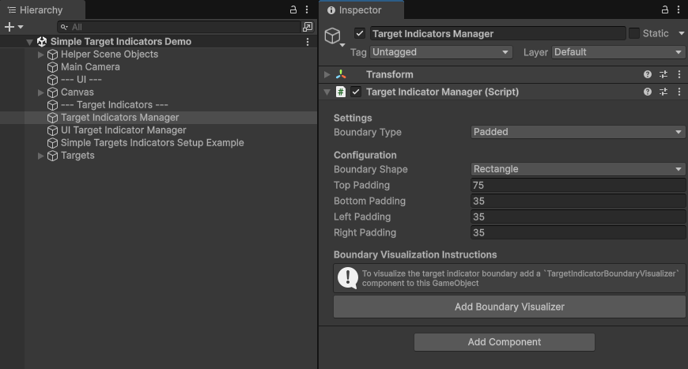
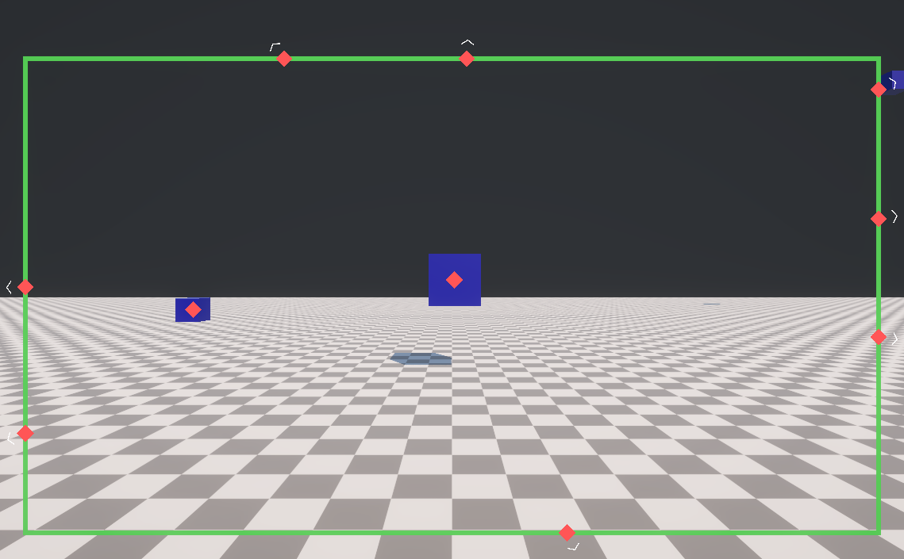
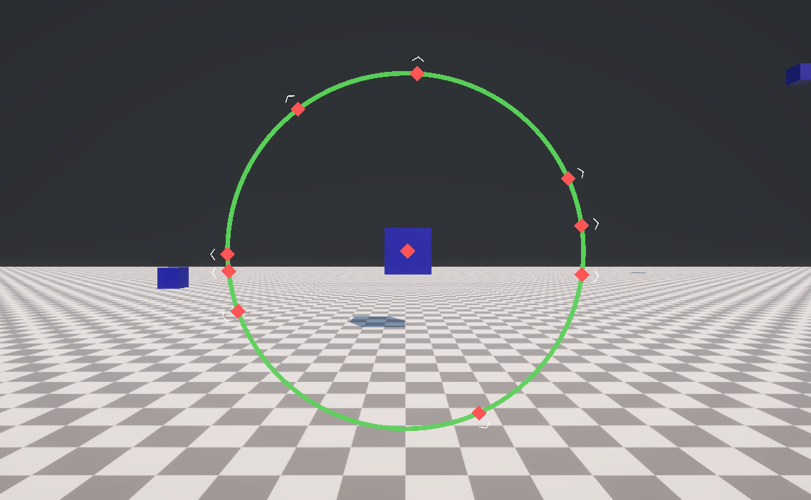
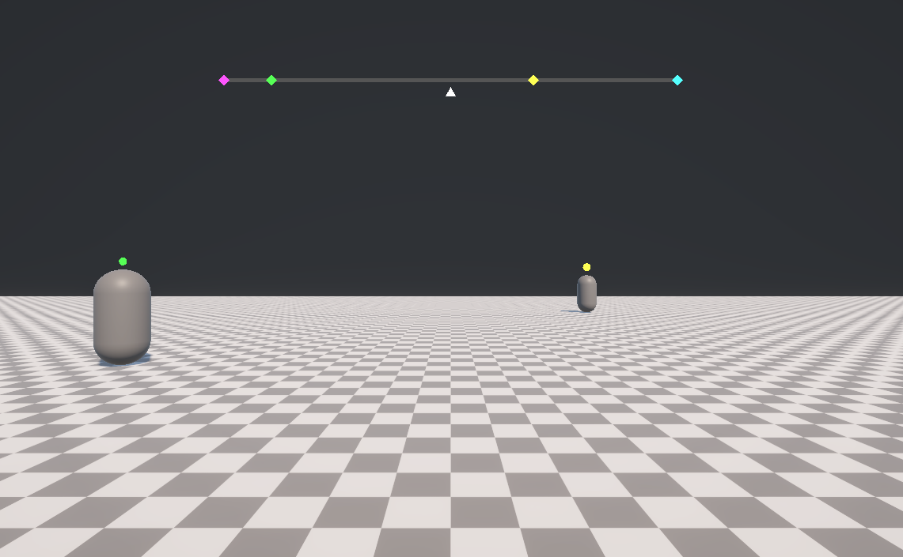
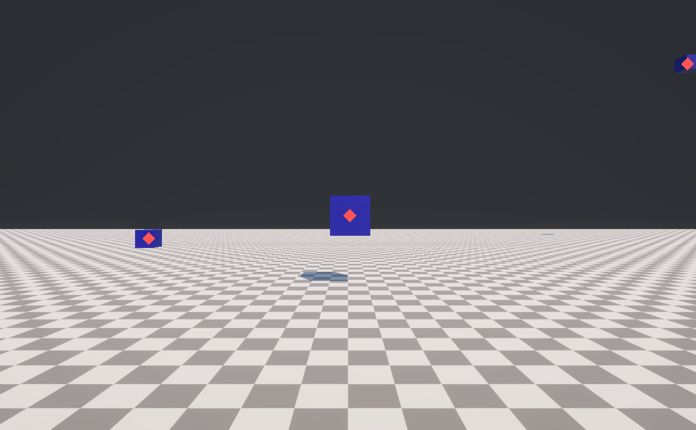
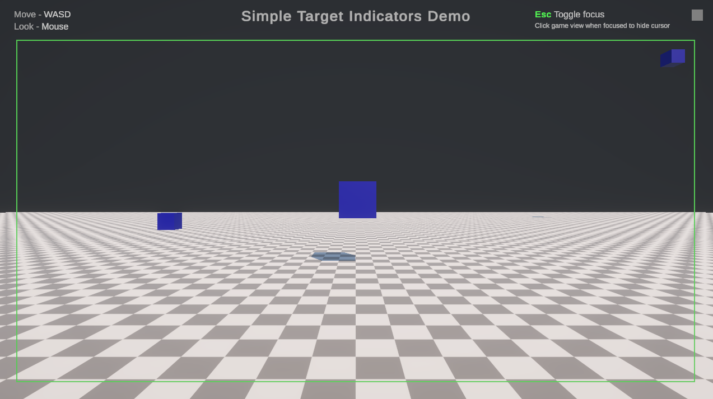
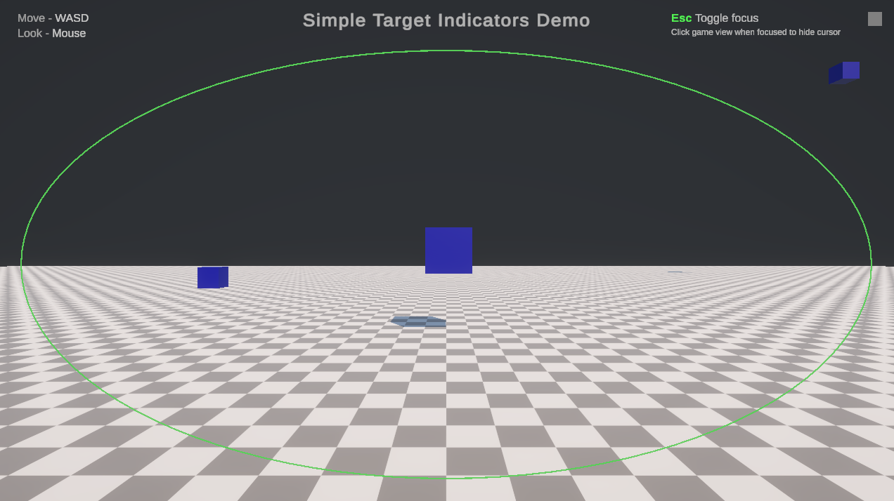
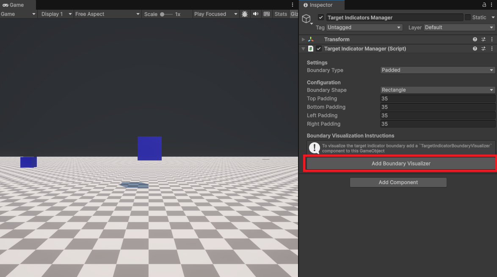
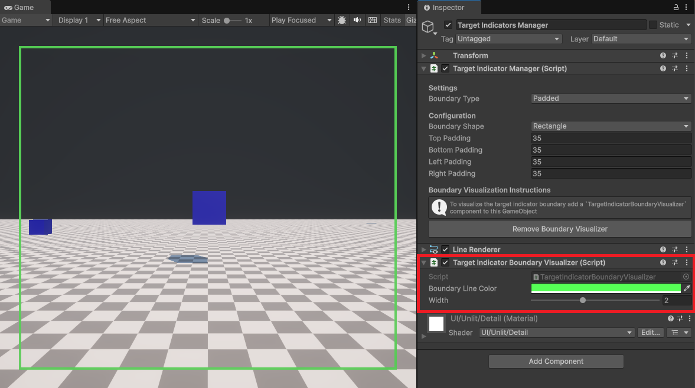

How to use target indicators
Target Indicators only requires the TargetIndicatorManager component which is responsible for adding, updating, and removing targets to track. Simply give it a transform or 3D point in space and it will return the screen pose for the indicator.
Use any UI system for drawing your indicators and customize your indicators for your projects needs. You can configure the target indicators manager to keep your indicators bound within the screen and adjust the padding, size, and shape of the boundary. Use multiple managers to have multiple boundary configurations for different indicator groups.
The following sections explain how to use the target indicators API.
Important
By default Target Indicators does not display or draw any UI in the scene. It only returns screen pose coordinates for you to display your own indicators. This enables you to use any UI system you want. If you are interested in a prebuilt indicator UI you can import the sample's starter assets which provides an easy to use solution with Unity UI. Refer to the samples docs to learn more about how to configure the prebuilt indicators.
Scene Setup
Add the TargetIndicatorManager to a GameObject in the hiearchy and edit the configuration to your projects needs.

Configure the Target Indicator Manager
The TargetIndicatorManager has several serialized fields that can be edited within the inspector or set via properties at runtime. The following sections explains each property in more detail.
Camera
The camera reference is used for calculating the screen space coordinates of each target. By default when the TargetIndicatorManager component is added or reset it will assign the camera in your scene with the MainCamera tag. If no camera has the MainCamera tag it will fallback to using the first camera in the scene. You can assign a different camera if you want to target a specific camera for your target indicators.
You can also assign the camera reference at runtime by the TargetIndicatorManager.Camera property.
Boundary type
The boundary type determines how target indicators should be positioned. For example indicators can be bound by the screen edges and automatically adjust with the screen size or they can have no boundary and only show an indicator when its target is on screen. You can change the boundary shape at runtime through the BoundaryType property.
Refer to the table below to understand the different boundary types:
| Boundary Type | Description | Use Case | Preview |
|---|---|---|---|
| Padded | Bounded by the screen edges with adjustable padding. Dynamically updates when the screen resizes. | Waypoints, points of interest, enemies, other players, etc. |  |
| Absolute | Bounded by the absolute size of the configured boundary regardless of changes in screen size. | First person games where you want to indicate the direction you were attacked from. |  |
| Compass Tape | Bounded between 0 and 1 where 0 is to the left, 1 is to the right. | Common in Battle Royale games you want to display indicators on the horizontal compass tape. |  |
| None | Unbounded and the target indicator is only visible when the target is on screen. | Use to compliment compass tape boundary type to indicate on screen position of targets. |  |
Boundary shape
When using Padded or Absolute boundaries, you can configure the shape of the boundary to be a Rectangle or Ellipse. You can change the boundary shape at runtime through the BoundaryShape property.
Rectangle

TargetIndicatorManager provides the Rectangle property to get the currently configured rectangles Rect data. This is used for the boundary visualizer but can be used for your apps needs as well.
Ellipse

TargetIndicatorManager provides the Ellipse property to get the currently configured Ellipse data. This is used for the boundary visualizer but can be used for your apps needs as well.
Padding
When BoundaryType is Padded you can adjust the distance in pixels between the edge of the screen and the boundary. You can configure the padding for the Top, Bottom, Left, and Right edges independently. These properties are ignored if the boundary shape is not set to Padded.
Size
When BoundaryType is Absolute you can adjust the size by the Width and Height properties. The size does not change if the screen resolution or aspect ratio changes. These properties are ignored if the boundary shape is not set to Absolute.
Visualize the boundary
You can visualize your current configuration at edit time and at runtime with the TargetIndicatorBoundaryVisualizer.
Add visualizer

Edit visualizer

Add a target
To add a target to track use TryAddTarget as shown in the following code example:
public void TryAddTargetExample(TargetIndicatorManager manager, Transform target)
{
var wasAdded = manager.TryAddTarget(target, out var targetIndicator);
if (!wasAdded)
{
// Failed to add target because max limit of targets is reached.
// Handle error.
return;
}
// Successfully added target.
}
The max number of targets that can be tracked at once is 100. TryAddTarget can only fail if you try to add more than 100 targets. To get the current number of tracked targets use TrackedTargetsCount. If you need more than 100 (god bless), you can use multiple target indicator managers.
Keep track of the returned TargetIndicator.TrackedIndicatorId in the out parameter to know which target indicator corresponds to a target.
Remove a target
To remove a target from being tracked use TryRemoveTarget as shown in the following code example:
public void TryRemoveTargetExample(TargetIndicatorManager manager, TargetIndicatorId id)
{
var wasRemoved = manager.TryRemoveTarget(id);
if (!wasRemoved)
{
// Failed to remove target because the target indicator ID was invalid.
// Handle error.
return;
}
// Successfully removed target.
}
Note
Removing a target can only fail if you pass an invalid TargetIndicatorId.
Remove all targets
To remove all targets at once use RemoveAllTargets as shown in the following code example:
public void RemoveAllTargetsExample(TargetIndicatorManager manager)
{
manager.RemoveAllTargets();
// Successfully removed all tracked targets.
}
Tip
If you just want to stop receiving updates you can disable the TargetIndicatorManager component. Re-enabling it will resume tracking targets.
Get a target
To check if a target indicator is being tracked use TryGetTargetIndicator as shown in the following code example:
public void GetATargetIndicatorExample(
TargetIndicatorManager manager, TargetIndicatorId id)
{
var didGet = manager.TryGetTargetIndicator(id, out var targetIndicator);
if (!didGet)
{
// Failed to get target because target indicator ID was invalid.
// Handle error.
return;
}
// Successfully received target indicator.
}
Get screen pose
If you want to get the screen pose of any world space position use GetScreenPose. This can be useful if you want to control your own life cycle, you only need a one time update, or need infrequent updates for a targets screen pose.
The following code example shows you how to use GetScreenPose:
public void GetScreenPoseExample(
TargetIndicatorManager manager, Vector3 worldSpacePosition)
{
var screenPose = manager.GetScreenPose(worldSpacePosition, out var isOutsideBounds);
// screenPose.position.x = horizontal axis coordinate in screen space (pixels).
// screenPose.position.y = vertical axis coordinate in screen space (pixels).
// screenPose.position.z = depth from the camera in world space (meters).
// screenPose.rotation = direction to target.
// isOutsideBounds = true if the screenPose.position is outside the configured bounds.
}
Is outside boundary
Each TargetIndicator contains an IsOutsideBounds property that you can use to know if a target indicators is outside the bounds of the current configuration when the TargetIndicator was created. If you want to know if any Vector3 position is outside the current boundary configuration use TargetIndicatorManager.IsOutsideBounds as shown in the following example:
public void IsOutsideBoundaryExample(TargetIndicatorManager manager, Vector3 worldSpacePosition)
{
var isOutsideBounds = manager.IsOutsideBounds(worldSpacePosition);
// isOutsideBounds = true if the pose.position is outside the configured bounds.
}
Life cycle events
While enabled, the TargetIndicatorManager component will check for changes every frame. If any anchors were added, updated, or removed, TargetIndicatorManager will invoke TargetIndicatorsAdded, TargetIndicatorsUpdated, TargetIndicatorsRemoved events respectively.
Each event passes a ReadOnlySpan
The following code example shows how you can subscribe to these events and iterate over the spans they pass:
public void LifeCycleExample(TargetIndicatorManager manager)
{
manager.TargetIndicatorsAdded += OnTargetIndicatorsAdded;
manager.TargetIndicatorsUpdated += OnTargetIndicatorsUpdated;
manager.TargetIndicatorsRemoved += OnTargetIndicatorsRemoved;
}
void OnTargetIndicatorsAdded(ReadOnlySpan<TargetIndicator> added)
{
foreach (var targetIndicator in added)
{
var screenPose = targetIndicator.ScreenPose;
}
}
void OnTargetIndicatorsUpdated(ReadOnlySpan<TargetIndicator> updated)
{
foreach (var targetIndicator in updated)
{
var updatedScreenPose = targetIndicator.ScreenPose;
}
}
void OnTargetIndicatorsRemoved(ReadOnlySpan<TargetIndicatorId> removed)
{
foreach (var targetIndicatorId in removed)
{
// TargetIndicatorId was removed.
}
}
You can disable the TargetIndicatorManager component to stop receiving life cycle events and control your own life cycle and rely on the TargetIndicatorManager exclusively for pose and boundary checks.
Using multiple target indicator managers
Some applications might require multiple boundary types or multiple configurations. You can have multiple TargetIndicatorManager components in your scene to get more complex designs. For example if you use BoundaryType.CompassTape you will only get indicators to display on the compass tape but might not know what target they correspond to.
You can have a second TargetIndicatorManager that is configured to use BoundaryType.None that marks the same target with a matching icon as used in your compass tape visualizer to indicate which target represents which marker in your compass tape indicator. The Samples provides an example of how to configre multiple target indicator managers.
XR
A common problem in XR is showing users where to look to find an important item or location in your app. You can configure your target indicators manager to guide users to targets in their environment. The current solution is limited and requires a specific configuration and setup. The following steps demonstrate how to setup your scene for XR:
- Set your boundary type to
Absolute - Edit the
WidthandHeight - Display you target indicators on a Canvas set to
Screen Space Cameraor UI system of your choice
The Samples provides an example of how to use UGui for XR.